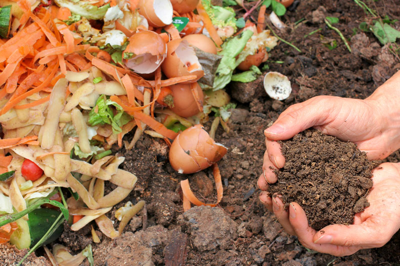

¡Consejos para plantar!
Busca los rayos del sol
Observa bien el lugar donde quieres poner el huerto. Para que crezcan la mayoria
de los vegetales, lo ideal es tener unas seis horas de luz solar. ¡OJO! si la zona
tiene mucho sol, tampoco es bueno, pues corres el riesgo de que se quemen las hojas
de algunas plantas.
Macetas con huecos
Una vez que ya gas elegido el lugar "perfecto" busca los recipientes en los que
vas a plantar. ¡Evita los poten sin agujeros; tus plantas necesitan que corra el agua!.
Idealmente podrias hacer macetas con botellas plasticas cortadas en la mitad.

Realiza un Compost con desechos organicos
El compost es un fertilizante o abono natural que se utiliza para mejorar el terreno
y aumentar sus nutrientes. Es un proceso en el cual se lleva a cabo la descomposicion
controlada de las materias organicas. Entre ellas destacan las frutas, los restos de
hojas, las verduras, etc. ¡Aprovecha los desechos organicos!